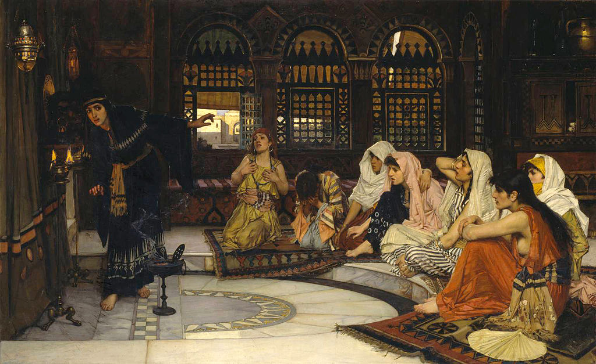

<head>
<meta charset="UTF-8" />
<meta name="keywords" content="drawing, painting" />
<meta name="description" content="drawings by Sunjy" />
<title>Sunjy</title>
<link rel="shortcut icon" type="image/x-icon" href="../../mImages/mCommon/favicon.ico" media="screen" />
<link rel="stylesheet" type="text/css" href="../../mCsses/mCommon/mCssA.css" />
<link rel="stylesheet" type="text/css" href="../../mCsses/mCommon/mCssB.css" />
<link rel="stylesheet" type="text/css" href="../../mCsses/mCommon/mCssC.css" />
<link rel="stylesheet" type="text/css" href="../../mCsses/mCommon/mCssD.css" />
<link rel="stylesheet" type="text/css" href="../../mCsses/mContent/mCssA.css" />
<link rel="stylesheet" type="text/css" href="../../mCsses/mContent/mCssB.css" />
<link rel="stylesheet" type="text/css" href="../../mCsses/mContent/mCssC.css" />
<link rel="stylesheet" type="text/css" href="../../mCsses/mContent/mCssD.css" />
</head>
<script type="text/javascript" src="../../mScripts/mContent/mContentAA.js" /></script>
<script type="text/javascript" src="../../mScripts/mContent/mContentAB.js" /></script>
<script type="text/javascript" src="../../mScripts/mContent/mContentAC.js" /></script>
<script type="text/javascript" src="../../mScripts/mContent/mContentAD.js" /></script>
<script type="text/javascript"></script> 
<script type="text/javascript">
document.write('<div class="mImgAbsolute"></div>');
/*
document.write('<p class="mFontSizeBColor" />From a white paper...</p>');
document.write('<table class="center"><tr><td>');
document.write('');
document.write('</td></tr></table>');
*/
</script>


<script type="text/javascript">
document.write('<p class="mFontSizeBColor" />Prophecy from the Mummified Head </p>');
document.write('<p class="mFontSizeSColor" />“Consulting the Oracle” by John William Waterhouse depicts a group of seven young girls, sitting in a semicircle around a lamplit shrine. They are waiting in anticipation for the priestess to interpret the words of the Teraph. The priestess motions for silence as she bends forward to catch the mysterious utterances.<br><br>The Teraph was a human head, cured with spices, which was fixed against the wall, with lamps being lit before it. A teraph was an idol or image reverenced by the ancient Hebrews and kindred peoples, apparently as a household god.<br><br>Primitive religious rites were performed in the presence of Teraph. Also, the imagination of diviners was inspired to hear a low voice predicting future events. The painting’s setting is imaginary but has exotic, middle-eastern motifs.<br><br>The atmosphere is highly dramatized with incense burner and the priestess straining to interpret the utterings of the mummified head. The composition includes a series of arched windows, the semi-circular design of the floor, and an echo of a theatrical setting with the marble step.<br><br>The young women’s expressions of apprehension and terror add to the atmosphere of tension, as they anticipate the possible prophecies from the priestess. <br><br>The diagonals of the inclined figure of the priestess and the seated women plus the out-of-place rug all add to the tension.<br><br>Teraphim<br><br>Teraphim is a Hebrew word from the Bible and was explained in rabbinical literature as meaning disgraceful things. In many English translations of the Bible, it is translated as idols or household gods.<br><br>During the excavations at ancient Jericho, evidence of the use of human skulls as cult objects were uncovered, lending credence to the rabbinical conjecture.<br><br>In the Old Testament book of Samuel, Michal helped her husband, the future King David, to escape from her father, King Saul, by using a teraph head. She lets him out through a window and then tricks Saul’s men into thinking that a teraphim in her bed is actually David. This suggests the size and shape of a man’s head.<br><br>The implied size and the fact that Michal could pretend that the Teraph was David’s head, has led to the rabbinical conjecture that they were heads, possibly mummified human heads.<br></p>');
document.write('<table class="center" /><tr><td>');
document.write('<br>The Teraph was a human head, cured with spices, which was fixed against the wall, with lamps being lit before it. A teraph was an idol or image reverenced by the ancient Hebrews and kindred peoples, apparently as a household god.<br><br>Primitive religious rites were performed in the presence of Teraph. Also, the imagination of diviners was inspired to hear a low voice predicting future events. The painting’s setting is imaginary but has exotic, middle-eastern motifs.<br><br>The atmosphere is highly dramatized with incense burner and the priestess straining to interpret the utterings of the mummified head. The composition includes a series of arched windows, the semi-circular design of the floor, and an echo of a theatrical setting with the marble step.<br><br>The young women’s expressions of apprehension and terror add to the atmosphere of tension, as they anticipate the possible prophecies from the priestess. <br><br>The diagonals of the inclined figure of the priestess and the seated women plus the out-of-place rug all add to the tension.<br><br>Teraphim<br><br>Teraphim is a Hebrew word from the Bible and was explained in rabbinical literature as meaning disgraceful things. In many English translations of the Bible, it is translated as idols or household gods.<br><br>During the excavations at ancient Jericho, evidence of the use of human skulls as cult objects were uncovered, lending credence to the rabbinical conjecture.<br><br>In the Old Testament book of Samuel, Michal helped her husband, the future King David, to escape from her father, King Saul, by using a teraph head. She lets him out through a window and then tricks Saul’s men into thinking that a teraphim in her bed is actually David. This suggests the size and shape of a man’s head.<br><br>The implied size and the fact that Michal could pretend that the Teraph was David’s head, has led to the rabbinical conjecture that they were heads, possibly mummified human heads.<br>" />');
document.write('</td></tr></table>');
</script>


